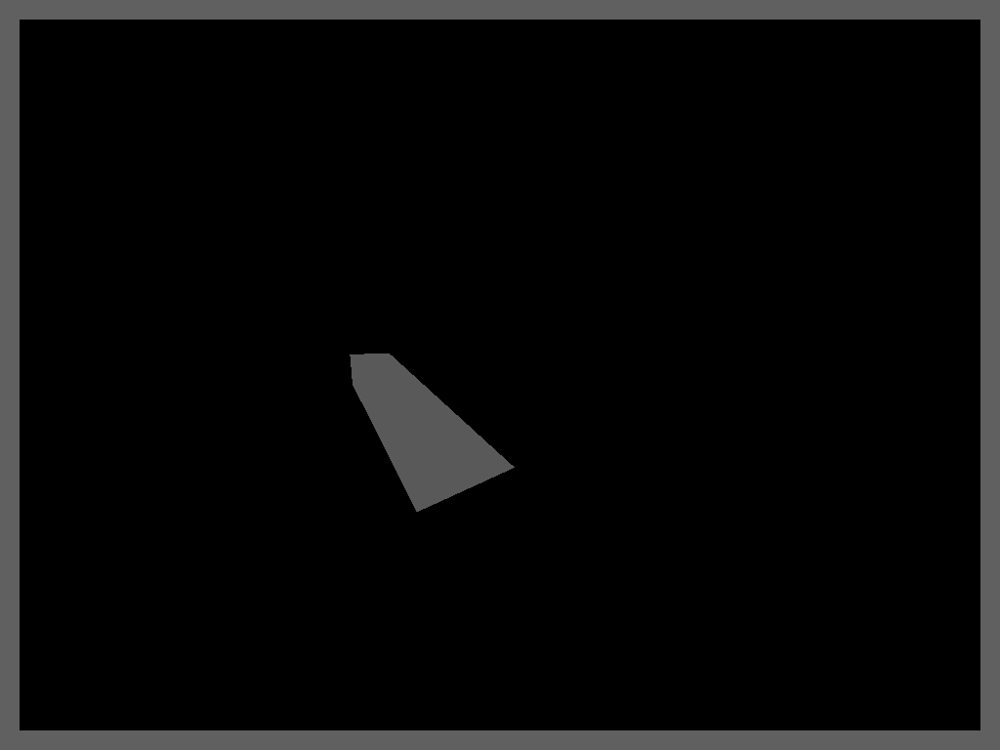
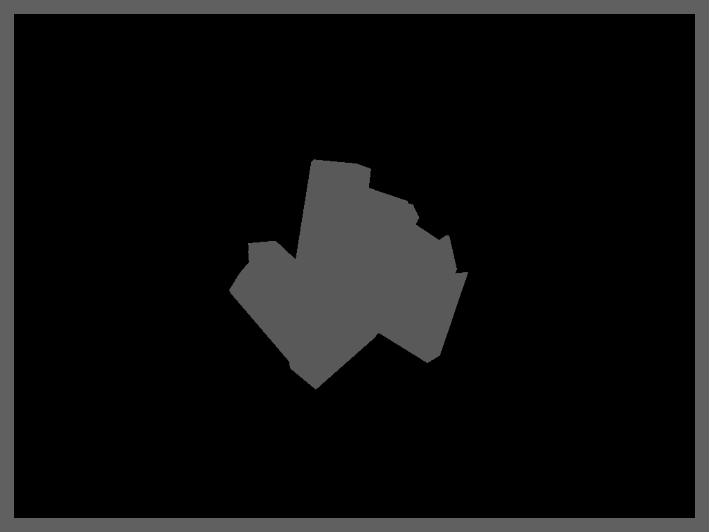
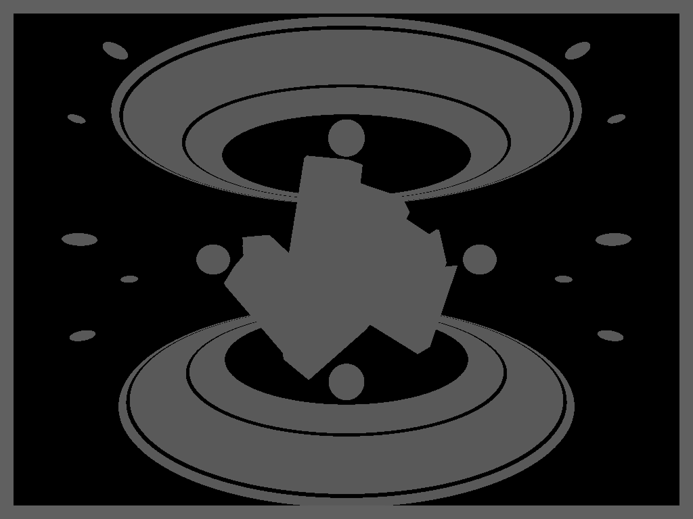
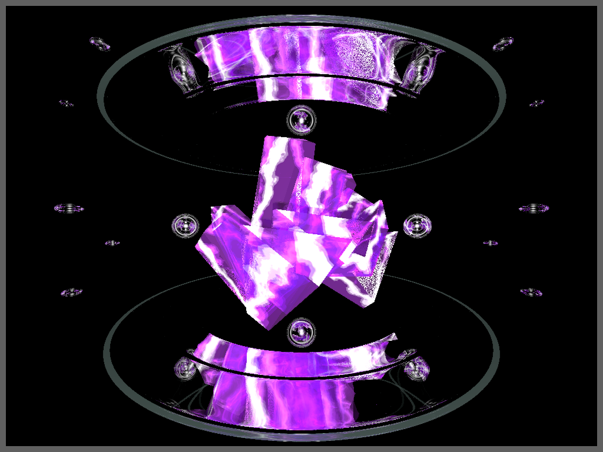
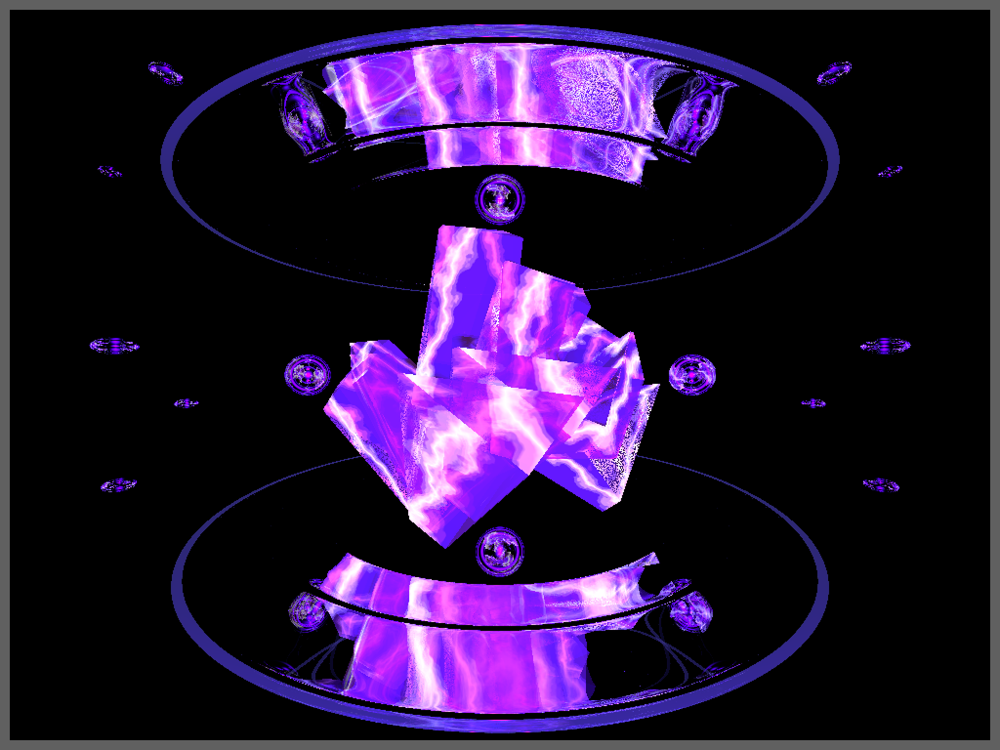
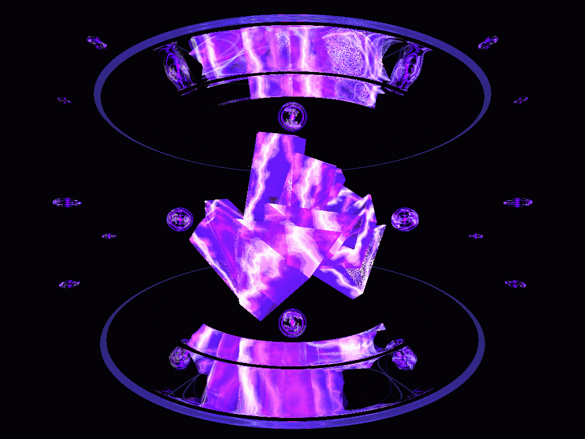

レイトレーシングで神秘の世界観を演出する3DCG作品
「Amethyst Resonance」
2年次前期の授業「コンピュータグラフィックス基礎」で個人制作した3DCG作品です。レイトレーシングによる光の反射を活かし、自分自身の感性で神秘的な世界観を表現しています。
制作はプログラミングで行っています。全体で40時間以上を要しました。
使用ツール
- POV-Ray
目的
授業で使用したPOV-Rayは、光の動きをコンピューターで計算し、リアルな表現をするレイトレーシングが可能であるため、それをより活かせる作品を制作したいと考えました。レイトレーシングを活かすためには、光を反射する物を表現する必要があるため、アメジストをテーマとして制作に取り掛かりました。
プログラミングによる3DCG制作は未経験であったため、制作を通してプログラミングによる基本的なCG表現の仕組みを理解することを目的としました。
制作プロセス
1.モデリング



アメジストは、積集合で不規則な形の欠片を作り、それらを複数作成して統合することでモデリングしています。他のオブジェクトに関しては、トーラスやスフィアなどの基本的な図形を自分の感性によって変形・配置し、神秘的な世界観を構築しています。
2.テクスチャリング

アメジストには、神秘のエネルギーを感じるテクスチャを採用しました。しかし、このテクスチャは光をあまり反射しないため、当初の「レイトレーシングを活かす」という目的が達成されないことに気づきました。そのため、他のオブジェクトにガラステクスチャを採用することで、神秘的な世界観を演出するとともに、レイトレーシングを活かせるテクスチャリングを施しています。
3.ライティング

レイトレーシングによる光の反射を最大限に表現するため、背景を黒にして、全体に強い紫の光を当てています。こうすることで、透明なガラステクスチャが光を反射し、紫色に光っているように見えます。
4.アニメーション作成

光の反射が変化する様子を表現したいと考え、アメジストの横にあるスフィアを公転させ、動きを加えました。プログラミングによって作成しているため、正確に公転させることに苦戦しましたが、試行錯誤を重ねて何とか実現することができました。
5.改善
Before
After
アメジストからスフィアが大量に発散する様子を表現したいと考え、スフィアの数を増やしました。また、アニメーションの速度を調整し、理想の世界観により近づけました。
コードを見る獲得した学び
プログラミングによるCG制作を初めて経験し、その基本的な仕組みを理解することができました。
モデラーと違い、コーディングの確認をするために、その都度結果を出力する必要があり、直感的に操作できない点に難しさを感じました。中でも、オブジェクト座標の概念理解に時間がかかりました。しかし、試行錯誤の結果、3Dにおけるオブジェクトの位置関係を深く理解することができました。また、制作を通して自分の感性を形にする力を養うことができたと考えています。
今後は更にCG制作スキルを向上させるため、2年次後期には「コンピュータグラフィックス演習」を履修し、より高度なプログラミングや、CGコンテンツを利用したWebページの作成技術について学習していきたいです。